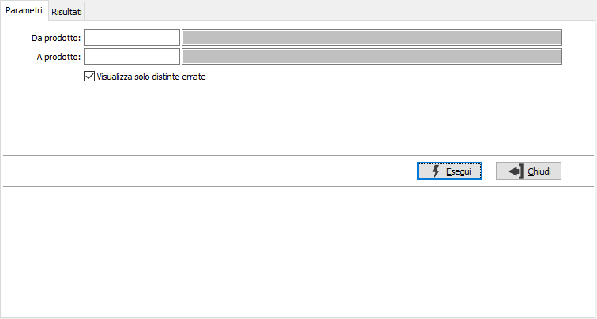
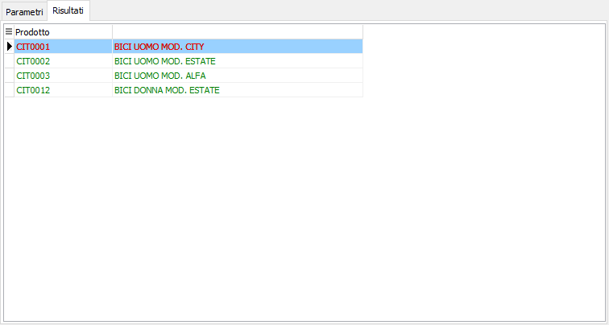

Controllo distinte base
La procedura consente di controllare le distinte base e segnalare quelle che hanno un livello massimo che eccede il livello massimo presente in configurazione distinta base. E' possibile mostrare nel risultato solo le distinte errate spuntando l'apposita casella.

Nella pagina dei risultati vengono mostrate le distinte base errate se selezionato di visualizzare solo queste, altrimenti tutte le distinte nei parametri e quelle errate vengono evidenziate in rosso.
